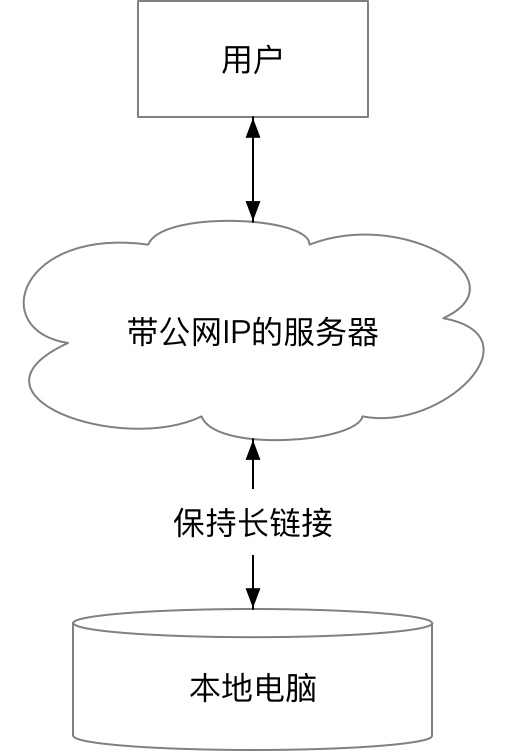
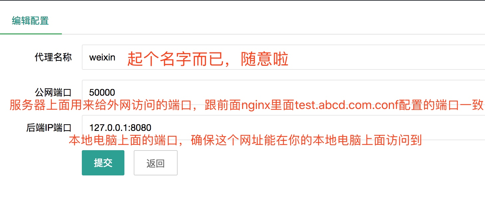
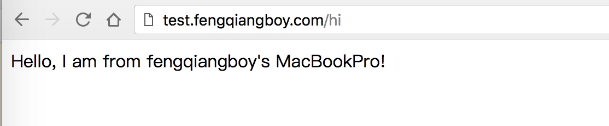

基于docker搭建lanproxy内网穿透服务
文档更新说明
2018年04月06日 v1.0
内网穿透相信是后端开发者经常遇到的需求，可是怎么实现呢？其实有现成的服务：花生壳、ngrok等，但是，最近花生壳宣布，免费版的内网穿透将不支持80端口映射了，而免费版的ngrok也不够稳定，于是乎，我就开始需找新的解决方案了
1、概述
内网穿透其实就是用服务器做一个中转，将请求转发，本文记录了在ubuntu 16.04上，基于docker搭建的内网穿透服务
1.1、原理
内网穿透的原理如下图所示：
- 用户访问我们的服务器，这个服务器是有公网IP的，所以用户可以无压力访问
- 服务器与本地电脑保持长链接，当有请求的时候，服务器将请求转发到我们的本地电脑
- 本地电脑将响应回复给服务器
- 服务器将响应回复给用户

1.2、实现
要搭建内网穿透，我们得完成两个任务
- 在公网能访问的服务器上运行我们的内网穿透服务；
- 在本地电脑上面运行内网穿透客户端。
当然，你可以自己根据原理实现一套，不过我们有现成的三方开源工具，可以帮我们实现这一套功能。这个就是我们今天的主角 lanproxy。
2、实现步骤
现成的工具已经找到，接下来就是简单的搭建一下了，搭建过程分为服务端和本地电脑端
2.1、服务端流程：
- 在服务器上安装
docker和nginx - 在服务器上通过
docker运行lanproxy server - 将域名解析到我们的服务器
- 配置
nginx反向代理 - 打开
lanproxy后台页面，添加客户端和映射信息
2.2、本地电脑流程：
- 运行要被映射的服务
- 运行本地电脑映射客户端程序(
lanproxy client)
下面开始服务端的配置：
2.1.1、在服务器上安装docker和nginx
nginx的安装是很简单的，一个命令就搞定
docker 也可以使用脚本安装，也是一句命令的事
# 1、安装nginx
$ sudo apt-get install nginx
# 2、安装docker
$ curl -fsSL https://get.docker.com | bash -s docker --mirror Aliyun
# 可选步骤，建docker源修改为阿里云
$ sudo mkdir -p /etc/docker
$ sudo tee /etc/docker/daemon.json <<-'EOF'
{
# 下面的链接需要到阿里云后台查看，每个人的加速地址是不一样的
"registry-mirrors": ["https://abcdefg.mirror.aliyuncs.com"]
}
EOF
$ sudo systemctl daemon-reload
$ sudo systemctl restart docker
2.1.2 在服务器上通过docker运行lanproxy server
服务安装完毕之后，就可以用docker跑服务了，可以自己写一个Dockerfile，这里，我就把自己写的放出来吧，大家可以拿去用着
这里我修改了
proxy-server-0.1的部分文件，因为在docker中，需要保存服务前台运行，否则容器会被kill掉，而官网默认的启动脚本是后台启动的，把bin/startup.sh里面的启动命令修改成前台启动即可（去掉nohub和后面的1&2 &）
# 1、克隆docker配置，如果要修改配置可以编辑 conf/config.properties 文件，配置方法见lanproxy官网
$ git clone https://github.com/fengqiangboy/lanproxy-docker.git lanproxy-docker
# 2、build docker镜像
$ cd lanproxy-docker
$ sudo bash build_container.sh
# 3、运行docker容器
$ bash run_container.sh
2.1.3 将域名解析到我们的服务器
需要两个域名，一个用来访问我们的lanproxy后台，一个用来访问我们需要内网穿透的服务
例如:
lanproxy.fengqiangboy.com -> 用来访问lanproxy后端
test.fengqiangboy.com -> 用来访问内网穿透服务
2.1.4配置nginx反向代理
将两个域名解析到我们的服务器之后，再通过反向代理，将其反代到我们的lanproxy端口
下面配置的最终效果就是：
- 我们可以通过
lanproxy.fengqiangboy.com访问lanproxy后台 - 我们可以通过
test.fengqiangboy.com访问本地电脑映射的服务
lanproxy.fengqiangboy.com.conf:
server {
listen 80;
# 这里使用自己的域名
server_name lanproxy.fengqiangboy.com;
charset utf-8;
location / {
proxy_set_header X-Real-IP $remote_addr;
proxy_set_header Host $http_host;
# 这里根据你的lanproxy配置，改成 config.server.port的值
proxy_pass http://127.0.0.1:8090;
client_max_body_size 35m;
proxy_http_version 1.1;
proxy_set_header Upgrade $http_upgrade;
proxy_set_header Connection "upgrade";
}
}
test.fengqiangboy.com.conf:
server {
listen 80;
# 这里使用自己的域名
server_name test.fengqiangboy.com;
charset utf-8;
location / {
proxy_set_header X-Real-IP $remote_addr;
proxy_set_header Host $http_host;
# 这里根据你的lanproxy配置，改成 外网接口 的值，在lanproxy后台网页上配置，后面配置
proxy_pass http://127.0.0.1:50000;
client_max_body_size 35m;
proxy_http_version 1.1;
proxy_set_header Upgrade $http_upgrade;
proxy_set_header Connection "upgrade";
}
}
2.1.5 打开lanproxy后台页面，添加客户端和映射信息
- 打开
http://lanproxy.fengqiangboy.com - 用前面
conf/config.properties文件中配置的账号和密码登录后台 - 添加一个客户端，记住客户端密钥
- 添加完客户端之后添加一个配置，配置如下图

到此，服务端的配置就完成了。下面开始本地电脑的配置。
2.2.1 运行要被映射的服务
既然要把内网的服务映射出去，那首先就要把本地电脑的服务跑起来吧，不然拿什么来映射？这里就很多操作方法了，各个语言都不一样，把自己的服务跑起来就行
2.2.2 运行本地电脑映射客户端程序(lanproxy client)
这里有两个方法，一个方法是使用官网提供的go版本，不需要安装java环境在本地电脑上，另外一种是使用官网提供的java版本，这里我使用java版本的。
克隆
lanproxy代码到本地电脑$ git clone https://github.com/ffay/lanproxy.git lanproxy打包
lanproxy
打包之前需要确保你安装了maven$ cd lanproxy $ mvn package修改配置文件信息
打包完成之后，客户端文件会出现在distribution/proxy-client-0.1目录下，打开之后有是个文件夹：bin、conf、lib和log，配置信息在conf/config.properties文件内，根据前面服务端的配置信息修改一下。# 这里是在lanproxy后台配置的密钥 client.key=key # 配置ssl信息，根据服务端的配置填写 ssl.enable=true ssl.jksPath=test.jks ssl.keyStorePassword=123456 # 服务器的ip server.host=163.162.161.160 #根据服务端配置，开启ssl的话填写ssl的端口，否则填写普通端口 server.port=4993启动客户端
客户端信息配置完成之后就可以启动客户端了# mac/linux使用这个 $ bash bin/startup.sh # Windows 直接运行 bin/startup.bat访问测试
按照前面的配置，这时候我们应该是可以通过
test.fengqiangboy.com来访问我们的内网服务了的，用浏览器打开看看
3、一点补充
为什么要使用docker？
使用docker主要是为了不破坏服务端环境，只是给
lanproxy安装了一个jdk8的环境，不影响其他服务继续运行；而且使用docker还可以很方便的转移到其它机器上面部署，只要把Dockerfile拷贝过去就可以了。这样搭建，服务器重启的话需要手动重启
lanproxy吗？不需要，在服务端启动
docker容器的脚本下，我添加了--restart unless-stopped参数，只要docker服务启动了，容器就会跟着启动，如果你不需要这个需求，可以去掉这个参数为什么不用花生壳？
前不久看到花生壳的公告，说从4月1日开始，免费版将不提供80端口映射，实际上我用这个映射最大的需求就是做微信调试，去掉80端口就不能做微信调试了，不满足我的需求了，当然，花生壳还是不错的，如果能满足你的需求，还是可以省时省力完成内网穿透的
本文已在版权印备案，如需转载请访问版权印。